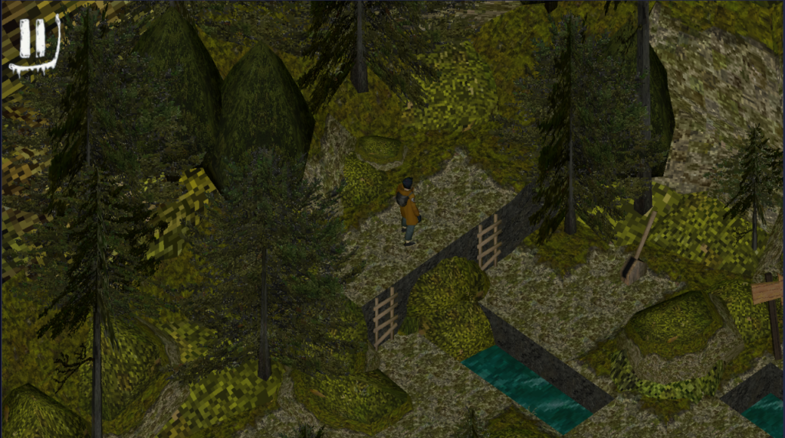
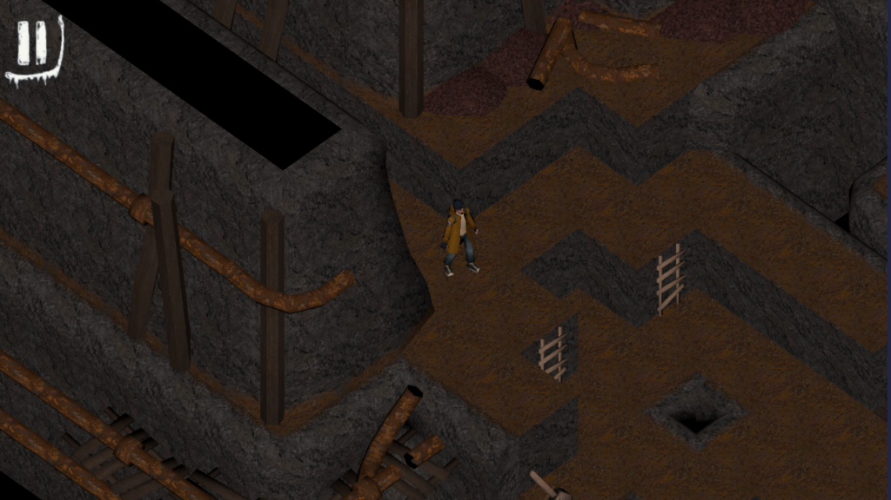

Project 2 – Call Of The Deep
- Reference game
- Lara Croft: Relic Run
- Genre
- Puzzle
- Duration
- 6 weeks (half time)
- Team size
- 15
- Engine
- Unity
Summary
For this project a lot of focus was on optimization because we had to run the game on a low-end tablet and it should be an enjoyable experience. So one of the main challenges was balancing the visual style with performance. We wanted the game to have a PlayStation 2 inspired look.
Contributions
Controls
The character movement was tile-based, meaning the player moved one tile at a time in the chosen direction.
Early in development, we decided to include ladders to create height differences in the levels. In the first version, the character simply teleported when moving between heights, but this was later updated once animations were added.
During play testing, we got feedback that the controls felt unintuitive. Players expected to swipe in the direction they wanted the character to move, but because the camera viewed the character from an angle, the controls did not always feel natural. To solve this, I adjusted the movement input to better match a diagonal swipe direction.
Graphics Optimization
Because much of the game took place outdoors, we wanted to include a lot of foliage. Our trees were built using two planes with textures for leaves and wood. This gave us the visual style we wanted, but it also caused major frame rate drops on our target device.
I spent a lot of time investigating the performance issues. One of the first things I added was frustum culling, which gave us a small frame boost, but not enough to solve it.

I noticed that the biggest frame drops happened in levels with many trees, like the one in the image. I started removing objects from the scene to find what could cause the frame drops. When I removed decorations and stones, it improved. However, the tree-heavy levels still performed much worse than cave levels when it had all the decorations.
I then tested trees without alpha and that made the FPS improve, but when I checked with other teams they had transparent textures as well, so why didn’t ours work?

After more debugging, I found that many textures were using transparency even when they didn’t need it. After asking a teacher, I learned that even if a texture appears fully opaque, Unity still performs the checks when transparency is enabled, which was enough to tank our performance on our test tablet.
To fix this, the graphics team created separate texture maps for assets that needed transparency and assets that did not. That reduced the rendering cost and gave us back the performance we needed.
Conclusion
This project taught me a lot about optimization and what you have to think about in mobile development. It also gave me experience with implementing controls based on play-test feedback and iterating on gameplay systems.